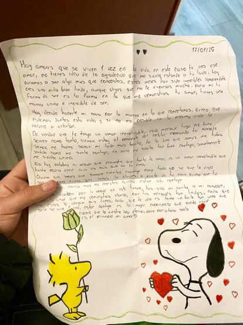
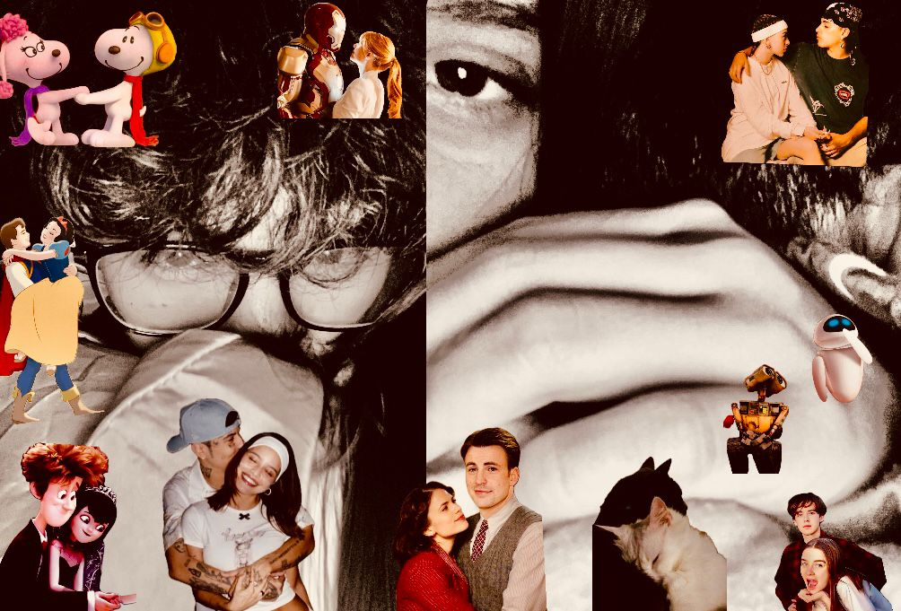

📖 Nuestra Historia
Cómo nos conocimos
Nos conocimos un 2 de noviembre, ese dia tu familia hizo una fiesta muy especial de dia del muertos, sali a jugar, y ese no sabia que mi vida cambiaria, si estaba seguro de algo y es que cuando te vi supe que tu y yo no seriamos solo conocidos, supe de tus gustos y al instante las mariposas en mi estomago se soltaron, ese mismo dia supe tu gusto por el voley y que eras una niña muy risueña por los video que veias, y si, te vi con ese maquillaje de calavera y que hermosa te veias y poco despues te vi sin el, y no tienes idea de que brillo se les dio a mis ojos en ese momento, y si mi niña aunque despues tu hayas tomado la iniciativa te hablarme yo me motive a conocerte porque en ti vi una niña tan unica y unos gustos tan fascinantes que al momento todo mi mundo se convirtio en ti mi niña, y aunque nuestra historia va mas alla de ese enamoramiento no puedo evitar de pensar en esa conexion que tuvimos tu y yo al coincidir tanto que nos convertimos en uno mismo

Medio año siendo novios
Hoy hace 6 meses dimos el paso mas importante para nosotros mi niña, todo esto lo recuerdo como si hubiera pasado hace poco y te voy a mentir que el tiempo contigo se me ha pasado volando pero cada segundo lo disfruto a tu lado, hace 6 meses me encontraba sentado y con nervios, saque una hoja y mis mejores versos y de esa manera me puse a escribir una carta, y si mi amor, tu eres mi amor que se vive una sola vez en la vida mi niña, me tome el tiempo de hacerte un dibujo y me di cuenta que era la primera carta que hice a mano, el primer dibujo para alguien, y las palabras mas bonitas que mi corazon haya sacado, se que me habia tardado en pedirte hacerte mi novia pero de algo estaba seguro y es que la espera valio la pena, te conoci mas que a mi mismo, sabia esa forma de tu cuerpo y de tus labios y el 15 de diciembre fue el momento de nuestro primer beso, sabia que tenia que llevarte a japon a conocer a ishikawa y que tu color favorito era el verde aunque despues lo cambiaras a gris, sabia que a tus xv te querian llevar argentina o regalrian una moto y te pregunte que si irias por mi en tu moto, sabia que tu te merecias el cielo entero cuando me platicaste todo lo que habias sufrido, todo el dolor, asi que si mi niña, me converti en quien nunca pense que fuera, una persona que dejo al lado su ego por alguien, mi niña hermosa, de verdad que ser tu novio ha sido la mejor cosa que me ha pasado en el mundo y estar al lado tuyo, tener a donde correr, mi mejor amiga la cual le cuento todo y es con quien saco chismeo, mi compañero pq a todos lado que vaya estas tu y aunque sea por un mensaje, mi novia pq sera quien este por delante de todos mi niña, con quien sacar mi amor y expresarme de manera fisica, verbal, sentimental, de todas las maneras mi amor, contigo soy quien quise ser y es por eso que tu eres mi relacion soñada, muchas veces me preguntaste si queriamos continuar por los defectos pero mientras me lo preguntabas yo ya tenia una respuesta en claro y es que los defectos yo nunca los vi, solo veia en ti una niña tan maravillosa y que necesitaba ser amada y sanada mi niña, y llevo medio año mejorando y siendo mejor para que tu mi niña, digas que tu principe es el mejor del mundo y te asegure un bien porque yo daria mi vida por tu bien sin dudarlo mi princesa hermosa
🎶 Canciones que te he dedicado
🐊 YOKO - ALVARO DIAZ
YOKO es la cancion mas bonita que te he dedicado y a la cual le tengo mas aprecio, una de las canciones mas importantes para nosotros y la relacion porque despues de haberte contado lo que en un futuro sanarias, asi es mi pasado, me haria el niño mas feliz por los mensajes que me escribiste despus de contarte y en efecto, supe que tu eras el amor de mi vida, te quiero siempre a mi ladito como yokoooo <33
⛈️ MAMICHULA - TRUENO
De la primeras canciones que te dedique esta siempre sera mi favorita y en nuestro momento favorito, tener esa conexion me hizo dedicarte una cancion mas alla que una melodia, sabia el significado que tenia para ti y para mi y asi fue, te la dedique con un amor inigualable y si mi amor, tu eres mi lluvia y amaba escucharla pensando en ti asi que feu cuando te la dedique mi niña hermosa 🥹💖
🌩️ SOLO POR VOS - TRUENO
una cancion que sabia el valor increible que tenia para ti y asi fue, te la dedique acompañado de una carta muy hermosa y de las bonitas que te he escrito mi niña hermosa y aun la tengo muy guardada mi amor, esta cancion es de las mas especiales que te he dedicado por todo lo que hay detras sobre nosotros mi niña hermosa, la dedique en el momento indicado mi niña 💞🥺
🪼 FUGAZ - PANTEON ROCOCO
Esta cancion te la dedique en un momento muy dificil para nosotros pero en ese momento quise demostrarte cuanto te he amado, creo que esta cancion te ha acompañado en cartas mi niña hermosa y creo que es muy bonito pq es una cancion que desde pequeño yo llevaba y es un sentimiento muy bonito que siento por ti como mi novia, mi mejor amiga, mi compañera, mi familia y mi futura esposa y madre de mis hijos 💗🪼
🖼️ Galería de Recuerdos
📃 Carta para ti
mi niña hermosa, hoy hace 6 meses decidi dar un paso mas alla que una amistad o un ligue, te pedi ser mi novia justo donde te conoci, asi es mi niña, sali con la carta con la que tanto me esforce y a la que le puse mucho amor, era mi primera mi carta, sabia que no ibamos a poder vernos esa noche pero ese dia lo tenia que hacer, asi es mi amor, el 12 de enero fue que yo te hice una pregunta y aunque no me hayas escuchado la mayoria de cosas si escuchaste la pregunta mas importante, "¿quieres ser mi novia?" fue la pregunta que nos marco tanto mi niña hermosa, sabia que no me equivoque al hacer esta pregunta y mirame depues de 6 meses donde me tienes, programandote una pagina mi niña hermosa y haciendote lo mas bonito para que tu y yo podamos seguir juntitos mi meduista 🥹💖 estos 6 meses siendo tu novio me llene de muchos aprendizajes y me guiaste a ser un buen niño, quiero agradecerte por estar dia con dia conmigo y poder aguantar a tu niño dramatico, celoso, sensible, amoroso, intenso, pero sobre todo un niño que ama mucho tu eres la niña perfecta mi amor y siempre he sido de la idea de que la perfeccion depende de la persona y tu eres totalmente mi perfeccion, tu sonrisa, tu cabello que amo su olor y que sientes bonito cuando te lo digo, tu cintura tan perfecta que esta hecha para mis brazos o tan enamorado de tus besos y de todas esas cosas que me enamoran como pasarnos un dulce de boca a boca, reirnos e inflarnos los cachetes, ese beso de vaca o tus mordidad o jaladas de pelo que aunque duelan no dejan de hacerme reir o tus chistes o cosquillas que me provocas que hacen que muera de risa pero no solo me enamore de eso, me enamore de la niña que el dia del voleybolista queria ir a felifictar a ishikawa me enamore de esa niña la cual le gusta chicken little, esa niña quien de pequeña guardaba sus cochinillas en su lapicerita, esa niñita que se mojo en su kinder y tu papi se preocupo te pregunto si te habias miado esa niña que desde los 8 años escucha nicki y que tuvo una obsecion por paulo por un tiempo, la niña que ama el voley, dormir, el frio, las cartas, las meduistas, a dannylux, trueno, y esa niña que por un tiempo no me dijo mien su nombre y le dije Maldona por un tiempo, de la niña que ama la musica, el color gris, los monos pq se ven buena onda, y que amas las manzanas rojas y las fresas que incluso por la vez que nos comimos una manzana las veo y no dejo de pensar en ti, amo cada detalle de ti mi niña, mi niña fan de marvel, mi niña fan de snoopy mi mi niña que tiene un fan y que es orgullo de un niño, mas alla de ese sentimiento de un te amo y de que eres mi novia, eres mi vida y quien mas desee en esta vida 🥹✨♥️ no hay duda de que eres mi princesa hermosa y mi reina, gracias por estos 6 meses o medio año junto a mi, gracias por todo esto que has hecho por mi, por tu novio mi niña y vas a ver que juntos saldremos de estos problemas juntos y juntos avanzaremos a todos lado mi niña hermosa pq a veces solo me imagino un camino con muchos arboles y cosas muy bonitas y tu caminando a mi lado mientras avanzamos a nuestro hogar mi niña, eres el sueño hecho realidad mas bonito que he tenido, eres mi concidencia mas linda, eres el mejor regalo que dios me pudo haber dado, eres la mejor cosa que me ha pasado en toda la vida y entre todo un mundo gris y oscuro estas tu siendo ma mejor artista y pintandome de colores 🥺💞🪼 mi medusita hermosa, por ultimo quiero agradecerte por todo aquello que me has regalado en este medio año, por tantas lagrimas, risas, amor y todo lo que hemos vivido y al escribirlo realmente me llega el recuerdo de todo eso mi niña, en serio es muy bonito todo eso que estamos viviendo mi niña hermosa y tu y yo vamosh por mas mi tiquita hermosa y vamos a llegar hasta esa casita, TE LO PROMETOOOOOOO te amo mi preciosa hermosa, mi mejor amiga, mi meduista, mi naranjita, mi, niña, mi vida, mi compañera, mi preciosa, mi bonita, mi amol, mi corazon, mi monita, la reina de mi ser, mi futura esposa, la madre de mis hijos, mi novia, te amo 3 millones en todos los para siempre mi niña hermosa, en todo aquello que vivamos tu y yo sera para nuestro para siempre 🥺💗
🎥 Algo especial
🎬 YOKO - Álvaro Díaz
esta cancion es de las importantes que te dedicare mi amor, pq con duki fue que te conoci y ahora te dedico una cancion de el, y si mi amor con vos no hay un dia que sea normal porque todos son espectaculares mi amor y tu llenaste este corazon vacio y quiero que ames tanto esta cancion como yo lo hago cuando la escucho y pienso en ti mi vida, gracias por todo eso mi princesa hermosam te amo 3 millones con todo mi ser y con todo lo que soy, gracias mi princesa hermosa 🥹💘